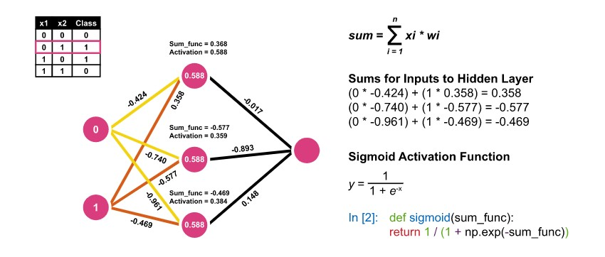

Unit 8 learnings
many great learnings were contained in Unit 8, such as:
- Structure of ANN
- Gradient Descent
- Derivative functions
- Bias
Gradient descent
Gradient descent is an iterative optimisation algorithm used to find the minimum of a function. In the case of machine learning systems, we would like to minimise the error function. For this, the local mimima can be found by moving the variable value in steps and iteratively calculate the MSE (Mean squared error).
As seen in the figure above, the slope of the function begins with a slow changing slope(toward the y-axis), and as the function gets closer to the local minima, the slope of the line changes. The learning rate
controls the step size for the iterative process. A small learning rate results in many iterations, but a more accurate minimum value.
The following diagram (Kwaitkowski R, 2021) shows different learning rates applied to a quadratic function [f(x) = x(exp2)-4x+1]. Learning rate 0.1, 0.3 0.8 and 0.9 are chosen, with their results. The
best response is seen with 0.1 as a learning rate, although this will iterate more cycles. Higher learning rates can cause some jumping around the curve before the minima is reached.
Structure of Artificial neural network
ANN structure, (Walczak &Cerpa, 2003)
Artificial neural networks emulate the human nervous system and use a set of reduced concepts from biological neural systems. The structure above shows the main elements of the network:
- The input layer where signals are passed to the network
- Interconnentions between layers and neurons which are weights set on forward propagation and updated on backpropagation
- One or more hidden layers form the processing stage of the model. Each neuron in the hidden layers contains an activation function calulated from the outputs of the previous neuron and weight

Activation function calculation, (University of Essex, 2022)
- The output layer processes the information from the hidden layer and generates an output
Error - Loss function
Simple calculation of error (loss) function, (University of Essex, 2022)
The above extract from the University of Essex lecturcast provides the simplest explanation of the error or loss function, which is the actual class minus the prediction. The below items can be
implemented to lower error:
1. Increase the model size
The model should have enough parameters in the input data to learn, and provide predictions. A richer training dataset, or more data may prove useful to lessen error. This has its limits as
data is expensive to procure.
2. Allow more Features
This means ensuring hyper-parameters are set in such a manner so as to allow the most features to pass through the network. These are for instance high filter values, or lower strides in each iteration.
3. Avoid Local Minimum
A local minimum is a source of high error. A neural network can be re-trained with different initial values to avoid it getting stuck on a local minimum. Also, gradient descent can be added to provide momentum
to the gradient descent algorithm.
4. Network Architecture
Network architecture can also cause high error as we have seen in our assessment 2. Better network architectures can be used to provide better trade off between loss and accuracy.
5. Add Regularization
L1 or L2 regularizzation is a methodproven technique to reduce overfitting of the model. Regularization holds each parameter closer to zero, ensuring no parameter is allowed to learn too much, and other parameters
too little.
One of the biggest issues which is faced with Artificial neural networks is explainability of the model. (Kubat, 2017) show the "black box" approach of ANN's and show the struggle to convince physicians
to accept and act on advice from an ANN based computer system, as much as a patient would agree with major surgery based solely on the output of a computer program. (Kubat, 2017) goes on to note that
machine learning algorithms should exist only to offer advice, with the final decision being the responsibility of humans. Machine learning can however alert doctors to previously unsuspected problems and
recommend additional laboratory or physical testing.